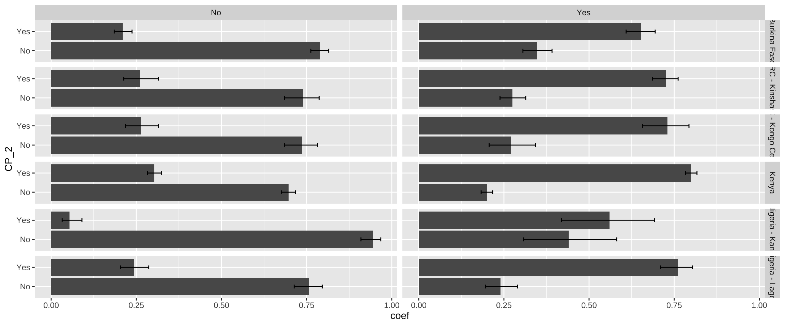
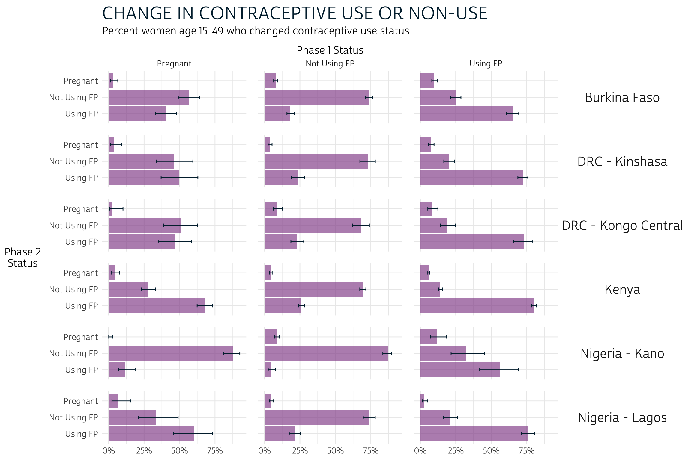
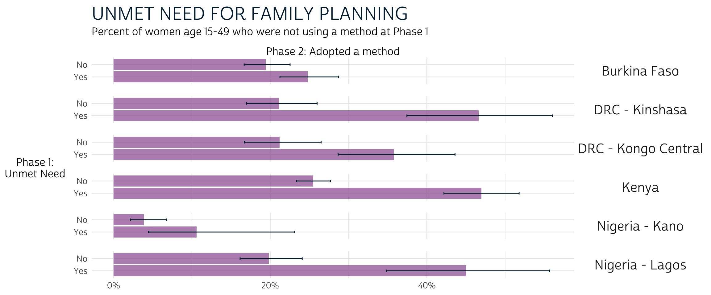

We’ve mentioned in previous posts in this series that data from the new PMA panel study gives researchers an important tool for understanding how women’s family planning demand and utilization changes over time. In particular, PMA surveys cover topics like:
- pregnancy intentions and outcomes
- current use of long-acting, short-acting, and traditional contraceptives
- discontinuation of family planning
- intentions for future use of family planning
- unmet need for family planning
- partner’s support for use of family planning
IPUMS PMA recently released harmonized data from four of the participating countries where the first two phases of data collection in this three-year panel study have already been completed. In this post, we’ll demonstrate how to use an IPUMS PMA data extract to calculate and compare key family planning indicators across multiple samples.
Our partners at PMA have published indicators for each of these samples, individually. Phase 2 panel results summaries are available for:
Here, we’ll share code you can use to reproduce the findings in each report, and we’ll demonstrate one simple approach to visualizing indicators across samples with ggplot2, a popular graphics package included in the tidyverse toolkit for R.
Setup
To get started, you’ll need to load three main packages:
- tidyverse, which includes ggplot2 and other data manipulation tools
- ipumsr for working with IPUMS data
- srvyr for use of survey design information (survey weights and sample cluster IDs)
We’ll feature data organized in wide format for each of the six samples currently available from IPUMS PMA. You’ll find the “wide” option under the “Longitudinal” sample button on our Select Samples page.

Notice that, under “Sample Members”, we’ve selected the button for “Female Respondents”. This excludes records for all household members who are not, themselves, members of the panel study. You’ll find one row for each woman who completed all or part of the Female Questionnaire for at least one phase of the study.
Add the following variables to you Data Cart, then click the View Cart button to begin checkout (preselected variables are added automatically).
- RESULTFQ - Result of female questionnaire
- PANELWEIGHT - Phase 2 female panel weight
- RESIDENT - Household residence / membership
- AGE - Age in female questionnaire
- PREGNANT - Pregnancy status
- BIRTHEVENT - Number of birth events
- EDUCATTGEN - Highest level of school attended (4 categories)
- MARSTAT - Marital status
- GEOCD - Province, DRC
- GEONG - State, Nigeria
- CP - Contraceptive user
- FPCURREFFMETHRC - Most effective current FP method
- UNMETYN - Total unmet need
- FPPARTSUPPORT - Husband / partner would be supportive of FP use
- FPPLANVAL - When will start using FP method in the future - value
- FPPLANWHEN - When will start using FP method in the future - unit
- COUNTRY - PMA country (preselected)
- EAID - Enumeration area (preselected)
Before completing checkout, make sure that you’ve selected the
dat data format (fixed-width text).

Finally, you’ll need to download 2 files: an xml
metadata file and a dat.gz compressed data file. We’ve
saved both of these files in the “data” folder in R’s working directory,
so we’ll import both to create a dataframe called dat:
dat <- read_ipums_micro(
ddi = "data/pma_00106.xml",
data = "data/pma_00106.dat.gz"
)
Populations of Interest
We’ve mentioned in previous posts that PMA samples are only valid for
the de
facto population: these are women who slept in the household during
the night before the interview for the Household Questionnaire in both
phases. These women are coded either 11 or 22
in both RESIDENT_1 and RESIDENT_2.
We also mentioned in our sample membership guide that
women who completed the Phase 1 Female Questionnaire may have been
lost to follow-up at Phase 2. As a reminder, we’ll need
to drop any cases where RESULTFQ_2 is not coded
1 for “completed”.
Additionally, a small number of women in each sample elected not to
respond to key questions regarding current use of contraceptives. These
cases are coded 90 and above, as shown on the CP
Codes tab. In a wide extract, these cases can be
identified with CP_1 and CP_2.
Finally, recall that only the Burkina Faso and Kenya samples are
nationally representative. Samples from DRC represent
regions identified by GEOCD,
while samples from Nigeria represent regions identified by GEONG.
In order to distinguish each population of interest, we’ll define a
custom variable POP that shows each sample’s COUNTRY
label concatenated with each of these regions where appropriate.
POP- Population of interest
The remaining sample size for each population of interest is simply a
count of
each level in POP.
# A tibble: 6 × 2
POP n
<chr> <int>
1 Burkina Faso 5207
2 DRC - Kinshasa 1967
3 DRC - Kongo Central 1511
4 Kenya 6934
5 Nigeria - Kano 998
6 Nigeria - Lagos 1088Population Inference
We’ll use the srvyr package to incorporate survey design information into each of the population estimates calculated below. This includes PANELWEIGHT, which represents the calculated inverse selection probability for all panel members, adjusted for loss to follow-up.
You might remember from earlier
posts that PMA surveys are collected within spatially-defined
sample clusters. We’ll also include identifying numbers
for each cluster as survey design information via EAID.
Here, we’ll use clusters identified in EAID_1.1
Most PMA samples are also collected within separate strata indicated
by STRATA.
We’ve previously
noted that STRATA is not available for samples
collected from DRC - Kinshasa and DRC - Kongo Central, so we
demonstrated how to create placeholder codes for those samples in a
variable we called STRATA_RECODE. To review:
STRATA_RECODE uses unique numeric codes from
STRATA, except that it also includes unique identifiers for
each sampled region in GEOCD.
dat <- dat %>%
mutate(
STRATA_RECODE = if_else(
is.na(GEOCD),
as.numeric(STRATA_1),
as.numeric(GEOCD)
)
)
dat %>% count(STRATA_1, GEOCD, STRATA_RECODE)
# A tibble: 28 × 4
STRATA_1 GEOCD STRATA_RECODE n
<int+lbl> <int+lbl> <dbl> <int>
1 40410 [Bungoma - urban, Kenya] NA 40410 153
2 40411 [Bungoma - rural, Kenya] NA 40411 488
3 40412 [Kakamega - urban, Kenya] NA 40412 133
4 40413 [Kakamega - rural, Kenya] NA 40413 438
5 40414 [Kericho - urban, Kenya] NA 40414 249
6 40415 [Kericho - rural, Kenya] NA 40415 453
7 40416 [Kiambu - urban, Kenya] NA 40416 213
8 40417 [Kiambu - rural, Kenya] NA 40417 311
9 40418 [Kilifi - urban, Kenya] NA 40418 170
10 40419 [Kilifi - rural, Kenya] NA 40419 455
11 40420 [Kitui - urban, Kenya] NA 40420 153
12 40421 [Kitui - rural, Kenya] NA 40421 585
13 40422 [Nairobi - urban, Kenya] NA 40422 493
14 40423 [Nandi - urban, Kenya] NA 40423 260
15 40424 [Nandi - rural, Kenya] NA 40424 711
16 40425 [Nyamira - urban, Kenya] NA 40425 143
17 40426 [Nyamira - rural, Kenya] NA 40426 382
18 40427 [Siaya - urban, Kenya] NA 40427 130
19 40428 [Siaya - rural, Kenya] NA 40428 437
20 40429 [West Pokot - urban, Kenya] NA 40429 104
21 40430 [West Pokot - rural, Kenya] NA 40430 473
22 56606 [Lagos, Nigeria] NA 56606 1088
23 56611 [Kano - Urban] NA 56611 437
24 56612 [Kano - Rural] NA 56612 561
25 85401 [Urban, Burkina Faso] NA 85401 3053
26 85402 [Rural, Burkina Faso] NA 85402 2154
27 NA 1 [Kinshasa] 1 1967
28 NA 2 [Kongo Central] 2 1511The srvyr function as_survey_design
allows us to pass the information in PANELWEIGHT,
EAID_1, and STRATA_RECODE to other package
functions like survey_mean.
We’ll also demonstrate how to use this information in formal
significance tests within each sample via svychisq.
Let’s begin with a simple example. The variable CP
indicates whether a woman was currently using any family planning
method. The variables CP_1 and CP_2 in our
wide extract represent responses collected at Phase 1
and Phase 2, respectively. With help from srvyr, we’ll obtain a
population-level estimate of the proportion of women who were using a
method at Phase 2, given their status at Phase 1.
cp_tbl <- dat %>%
group_by(POP) %>%
summarise(
.groups = "keep",
cur_data() %>%
as_survey_design(weight = PANELWEIGHT, id = EAID_1, strata = STRATA_RECODE) %>%
group_by(CP_1, CP_2) %>%
summarise(survey_mean(vartype = "ci", prop = TRUE, prop_method = "logit"))
)
cp_tbl
# A tibble: 24 × 6
# Groups: POP [6]
POP CP_1 CP_2 coef `_low` `_upp`
<chr> <int+lbl> <int+lbl> <dbl> <dbl> <dbl>
1 Burkina Faso 0 [No] 0 [No] 0.790 0.763 0.815
2 Burkina Faso 0 [No] 1 [Yes] 0.210 0.185 0.237
3 Burkina Faso 1 [Yes] 0 [No] 0.347 0.306 0.391
4 Burkina Faso 1 [Yes] 1 [Yes] 0.653 0.609 0.694
5 DRC - Kinshasa 0 [No] 0 [No] 0.739 0.685 0.787
6 DRC - Kinshasa 0 [No] 1 [Yes] 0.261 0.213 0.315
7 DRC - Kinshasa 1 [Yes] 0 [No] 0.275 0.239 0.314
8 DRC - Kinshasa 1 [Yes] 1 [Yes] 0.725 0.686 0.761
9 DRC - Kongo Central 0 [No] 0 [No] 0.736 0.685 0.782
10 DRC - Kongo Central 0 [No] 1 [Yes] 0.264 0.218 0.315
11 DRC - Kongo Central 1 [Yes] 0 [No] 0.270 0.207 0.343
12 DRC - Kongo Central 1 [Yes] 1 [Yes] 0.730 0.657 0.793
13 Kenya 0 [No] 0 [No] 0.697 0.676 0.717
14 Kenya 0 [No] 1 [Yes] 0.303 0.283 0.324
15 Kenya 1 [Yes] 0 [No] 0.200 0.183 0.217
16 Kenya 1 [Yes] 1 [Yes] 0.800 0.783 0.817
17 Nigeria - Kano 0 [No] 0 [No] 0.946 0.910 0.968
18 Nigeria - Kano 0 [No] 1 [Yes] 0.0544 0.0321 0.0905
19 Nigeria - Kano 1 [Yes] 0 [No] 0.440 0.308 0.581
20 Nigeria - Kano 1 [Yes] 1 [Yes] 0.560 0.419 0.692
21 Nigeria - Lagos 0 [No] 0 [No] 0.757 0.713 0.796
22 Nigeria - Lagos 0 [No] 1 [Yes] 0.243 0.204 0.287
23 Nigeria - Lagos 1 [Yes] 0 [No] 0.240 0.196 0.290
24 Nigeria - Lagos 1 [Yes] 1 [Yes] 0.760 0.710 0.804 Here, we first use group_by to
divide the data extract into individual samples defined by
POP. We then reference each of these samples as cur_data
inside a summary function defined by summarise -
this ensures that the population estimates obtained from our combined
data extract are identical to those you would obtain if you downloaded
one extract for each sample and analyzed them separately.
Within summarise, we
use as_survey_design
to specify information about the design of each sample, and we then use
a second group_by to
identify each of our variables of interest, CP_1 and
CP_2. Finally, we use a second summarise
function to calculate a srvyr summary statistic: in
this case, we use survey_mean
to estimate proportions in the population.
The population estimate for each row appears in the column
_coef. Looking at row 1, we would estimate that 79% of
women aged 15-49 in Burkina Faso used no method both at Phase 1
and again at Phase 2. The columns _low and
_upp report the limits of a 95% confidence interval: 76.3%
and 81.5%.
Comparing these confidence intervals gives us an informal,
conservative way to test for a significant difference between outcomes
for each POP: if the intervals for any pair of outcomes in
the same sample include no common values, we’ll say that a significant
difference exists. Formal testing may also reveal significant
differences between pairs of outcomes where these intervals overlap only
slightly. Our approach is well suited for data visualization, but
it should not replace formal testing. Fortunately, you can adapt our
code to replace (or complement) the output from survey_mean.
For example, here we demonstrate how to calculate a Rao-Scott
chi-square test for significant differences between the estimated
population proportions for each POP and the proportions we
would expect to observe if Phase 2 outcomes were statistically
independent from Phase 1 conditions.2 Because we’re interested
in just one summary statistic per sample, we no longer need to group_by
CP_1 and CP_2; instead, we’ll use the formula
~CP_1 + CP_2 in the function svychisq.
rao_tbl <- dat %>%
group_by(POP) %>%
summarise(
.groups = "keep",
cur_data() %>%
as_survey_design(weight = PANELWEIGHT, id = EAID_1, strata = STRATA_RECODE) %>%
summarise(rao = svychisq(~CP_1 + CP_2, design = .) %>% list)
)
rao_tbl
# A tibble: 6 × 2
# Groups: POP [6]
POP rao
<chr> <list>
1 Burkina Faso <htest>
2 DRC - Kinshasa <htest>
3 DRC - Kongo Central <htest>
4 Kenya <htest>
5 Nigeria - Kano <htest>
6 Nigeria - Lagos <htest>Our new summary column rao contains output for each
sample’s test in a list.
From here, you can extract output elements rowwise by
name like so:
rao_tbl %>%
rowwise() %>%
mutate(
`F` = rao$statistic,
p.value = rao$p.value,
sig95 = p.value < 0.05
)
# A tibble: 6 × 5
# Rowwise: POP
POP rao F p.value sig95
<chr> <list> <dbl> <dbl> <lgl>
1 Burkina Faso <htest> 468. 4.62e- 50 TRUE
2 DRC - Kinshasa <htest> 216. 4.80e- 21 TRUE
3 DRC - Kongo Central <htest> 123. 9.43e- 16 TRUE
4 Kenya <htest> 1140. 8.58e-102 TRUE
5 Nigeria - Kano <htest> 89.2 2.23e- 9 TRUE
6 Nigeria - Lagos <htest> 204. 2.85e- 19 TRUE Visualization
We’ll use simple grouped bar charts to show population estimates for each proportion below. A grouped bar chart differs from the stacked bar charts shown in PMA reports in that each response is plotted along an axis (rather than stacked together in a single bar). We’ll show grouped bar charts here so that we can also include error bars representing a 95% confidence interval for each proportion.
For example, let’s plot the estimates created in cp_tbl
above. As a preliminary step, we’ll recode CP_1 and
CP_2 with as_factor
and sort their levels with fct_relevel.
This ensures that the value labels for each variable will be
printed on our plot.
Next, we’ll use ggplot2 to build the plot. Because our data includes multiple samples, we’ll use facet_grid to plot all summary data in multiple panels. The functions geom_bar and geom_errorbar plot the grouped bars and error bars, respectively. A baseline plot should look something like this:
cp_tbl %>%
ggplot(aes(x = coef, y = CP_2)) +
facet_grid(rows = vars(POP), cols = vars(CP_1)) +
geom_bar(stat = "identity") +
geom_errorbar(aes(xmin = `_low`, xmax = `_upp`), width = 0.2)

One of the powerful features of ggplot2
is that you can use pre-built
themes to customize this baseline layout. We’ll build on theme_minimal
to create our own theme_pma (with custom fonts incorporated
by the sysfonts and showtext
packages). Feel free to use our theme, or tweak it to create
your own!
library(showtext)
sysfonts::font_add(
family = "cabrito",
regular = "../../fonts/cabritosansnormregular-webfont.ttf"
)
showtext::showtext_auto()
theme_pma <- theme_minimal() %+replace%
theme(
text = element_text(family = "cabrito", size = 13),
plot.title = element_text(size = 22, color = "#00263A",
hjust = 0, margin = margin(b = 5)),
plot.subtitle = element_text(hjust = 0, margin = margin(b = 10)),
strip.background = element_blank(),
strip.text.y = element_text(size = 16, angle = 0),
panel.spacing = unit(1, "lines"),
axis.title.y = element_text(angle = 0, margin = margin(r = 10))
)
Throughout this post, we’ll be repeating the same functions to create
grouped bars, error bars, and labels for our plot. In order to avoid
repeating ourselves each time, we’ll combine these functions together
with theme_pma in a single function called
pma_bars.
pma_bars <- function(
title = NULL, # an optional title
subtitle = NULL, # an optional subtitle
xaxis = NULL, # an optional label for the x-axis (displayed above)
yaxis = NULL # an optional label for the y-axis (displayed left)
){
components <- list(
if(exists("theme_pma")){theme_pma},
labs(
title = title,
subtitle = subtitle,
y = str_wrap(yaxis, 10),
x = NULL,
fill = NULL
),
scale_x_continuous(
position = 'bottom',
sec.axis = sec_axis(trans = ~., name = xaxis, breaks = NULL),
labels = scales::label_percent()
),
scale_y_discrete(limits = rev),
geom_bar(stat = "identity", fill = "#98579BB0"),
geom_errorbar(
aes(xmin = `_low`, xmax = `_upp`),
width = 0.2,
color = "#00263A"
)
)
}
Going forward, we’ll incorporate pma_bars together with
a ggplot
and facet
function for a given set of variables like so:
cp_tbl %>%
ggplot(aes(x = coef, y = CP_2)) +
facet_grid(rows = vars(POP), cols = vars(CP_1)) +
pma_bars(
title = "Change in Contracptive Use Status",
subtitle = "A grouped bar chart, faceted by population of interest",
xaxis = "Phase 1",
yaxis = "Phase 2"
)

Key Indicators
Contraceptive Use or Non-Use
Let’s continue our examination of CP.
In the PMA reports for each sample linked above, you’ll notice that
women who were pregnant at either phase are distinguished from women who
reported use or non-use in CP_1 or CP_2. We’ll
identify these women in the variable PREGNANT,
and then we’ll create a combined indicator called
FPSTATUS.
FPSTATUS- Pregnant, using contraception, or using no contraception
dat <- dat %>%
mutate(
FPSTATUS_1 = case_when(
PREGNANT_1 == 1 ~ "Pregnant",
CP_1 == 1 ~ "Using FP",
CP_1 == 0 ~ "Not Using FP"
),
FPSTATUS_2 = case_when(
PREGNANT_2 == 1 ~ "Pregnant",
CP_2 == 1 ~ "Using FP",
CP_2 == 0 ~ "Not Using FP"
),
across(
c(FPSTATUS_1, FPSTATUS_2),
~.x %>% fct_relevel("Pregnant", "Not Using FP", "Using FP")
)
)
We’ll now revise cp_tbl to include information from
FPSTATUS_1 and FPSTATUS_2. This will help us
answer key questions like:
- Are women who were pregnant at Phase 1 more likely to use or not use family planning at Phase 2?
- Are women who were using (or not using) contraception at Phase 1 likely to maintain the same status at Phase 2?
Next, we’ll plot cp_tbl with pma_bars:
cp_tbl %>%
ggplot(aes(x = coef, y = FPSTATUS_2)) +
facet_grid(cols = vars(FPSTATUS_1), rows = vars(POP)) +
pma_bars(
"CHANGE IN CONTRACEPTIVE USE OR NON-USE",
"Percent women age 15-49 who changed contraceptive use status",
xaxis = "Phase 1 Status",
yaxis = "Phase 2 Status"
)

To reiterate: comparing the error bars within each of these 18 panels gives us a informal, but conservative test for significant difference. We’ll say that a significant difference occurs where two pairs of error bars do not overlap (but additional testing may be necessary to determine whether a significant difference occurs where error bars overlap only slightly). A few observations:
- For women who were pregnant at Phase 1, there is usually no apparent
difference between using and not using family planning at Phase 2. Kenya
and Nigeria - Kano are the exception: in Kenya, pregnant women at Phase
1 were appear more likely to be using FP at Phase 2, while the opposite
is true in Kano.
- Overall, non-pregnant women at Phase 1 appeared more likely to maintain the same status (use or non-use) at Phase 2 than they were to switch or become pregnant.
Contraceptive Method Type
PMA surveys also ask contraceptive users to indicate which method they are currently using at each phase of the study. If a woman reports using more than one method, FPCURREFFMETH shows her most effective currently used method. These responses are combined with detailed information about use of the lactational amenorrhea method (LAM), emergency contraception, or injectable type in FPCURREFFMETHRC. PMA reports use FPCURREFFMETHRC to determine whether each woman’s most effective current method is a short-acting, long-acting, or traditional method.
Long-acting methods include:
- IUDs
- implants
- male sterilization
- female sterilization
Short-acting methods include:
- injectables (intramuscular and subcutaneous)
- the pill
- emergency contraception
- male condoms
- female condoms
- LAM
- diaphragm
- foam/jelly
- standard days method
Traditional methods include:
- rhythm
- withdrawal
- other traditional
These methods are coded sequentially by group in FPCURREFFMETHRC. Women who are “NIU (not in universe)” were using no method.
# A tibble: 19 × 2
FPCURREFFMETHRC_1 n
<int+lbl> <int>
1 101 [Female Sterilization] 198
2 102 [Male Sterilization] 1
3 111 [Implants] 2248
4 112 [IUD] 226
5 121 [Injectables (3 months)] 1412
6 123 [Injectables (Sayana Press)] 296
7 131 [Pill] 547
8 132 [Emergency Contraception] 243
9 141 [Male condom] 791
10 142 [Female condom] 1
11 151 [Diaphragm] 1
12 152 [Foam] 1
13 160 [Standard Days/Cycle Beads Method] 70
14 170 [Lactational amenorrhea method (LAM)] 24
15 210 [Rhythm] 569
16 220 [Withdrawal] 351
17 240 [Other traditional] 153
18 998 [No response or missing] 1
19 999 [NIU (not in universe)] 10572We’ll use across to
recode the Phase 1 and Phase 2 versions of FPCURREFFMETHRC
simultaneously. We’ll also attach the prefix CAT to each
variable, indicating that we’ve created “categorized” versions of
each.
CAT_FPSFPCURREFFMETHRC_1- Phase 1 contraceptive method typeCAT_FPSFPCURREFFMETHRC_2- Phase 2 contraceptive method type
Next, we’ll generate population estimates for our derived variables,
CAT_FPCURREFFMETHRC_1 and
CAT_FPCURREFFMETHRC_2.
We’ll again use pma_bars to plot the results.
meth_tbl %>%
ggplot(aes(x = coef, y = CAT_FPCURREFFMETHRC_2)) +
facet_grid(cols = vars(CAT_FPCURREFFMETHRC_1), rows = vars(POP)) +
pma_bars(
"CHANGE IN CONTRACEPTIVE METHOD TYPE",
"Percent of women age 15-49 who changed contraceptive method or use status",
xaxis = "Phase 1 Method",
yaxis = "Phase 2 Method"
)

What do we learn from this plot? Let’s consider each column in turn:
- Users of “long-acting” methods at Phase 1 appear more likely to have used “long-acting” methods at Phase 2 than to have changed status (except perhaps in Kano, where the intervals for “long-acting” and “none” overlap at Phase 2).
- Users of “short-acting” methods at Phase 1 appeared generally likely to use them again at Phase 2, but some samples show that women are equally likely to be using “none” at Phase 2. A difference between these two outcomes is visually apparent only in Kinshasa, Kenya, and Lagos (where women were more likely to be using “short-acting” methods than “none”).
- The status of Phase 1 “traditional” users is generally unclear at Phase 2. In Kinshasa, Kongo Central, and Lagos, these women seem most likely to remain “traditional” users at Phase 2. Elsewhere, there are no clear trends.
- Users of “none” at Phase 1 were clearly most likely to remain as such at Phase 2.
Contraceptive Dynamics by Subgroup
We can also use FPCURREFFMETHRC
to see whether women switched methods, stopped using any method, started
using any method, or made no changes. Let’s summarize this information
as CHG_FPCURR:
CHG_FPCURR- Change in contraceptive use between Phase 1 and Phase 2
dat <- dat %>%
mutate(
CHG_FPCURR = case_when(
FPCURREFFMETHRC_1 > 900 & FPCURREFFMETHRC_2 > 900 ~ "Continued non-use",
FPCURREFFMETHRC_1 > 900 ~ "Started using",
FPCURREFFMETHRC_2 > 900 ~ "Stopped using",
FPCURREFFMETHRC_1 != FPCURREFFMETHRC_2 ~ "Changed methods",
FPCURREFFMETHRC_1 == FPCURREFFMETHRC_2 ~ "Continued method"
)
)
PMA reports disaggregate the outcomes captured in
CHG_FPCURR by age, marital status, education level, and
parity (number of live childbirths).
Age
We’ll use PMA’s categorization of AGE_2 to examine
differences between women in three categories.
CAT_AGE_2- Phase 2 age (3 categories)
Plotting CAT_AGE_2 on the y-axis allows us to compare
confidence intervals across age groups. For example, notice that women
aged 15-19 in every population seem more likely to continue non-use than
women who are aged 20-24 or 25-49 (column 3).
dat %>%
group_by(POP) %>%
summarise(
.groups = "keep",
cur_data() %>%
as_survey_design(weight = PANELWEIGHT, id = EAID_1, strata = STRATA_RECODE) %>%
group_by(CAT_AGE_2, CHG_FPCURR) %>%
summarise(survey_mean(vartype = "ci", prop = TRUE, prop_method = "logit"))
) %>%
ggplot(aes(x = coef, y = CAT_AGE_2)) +
facet_grid(cols = vars(CHG_FPCURR), rows = vars(POP)) +
pma_bars(
"CHANGE IN CONTRACEPTIVEUSE STATUS, BY AGE",
yaxis = "Phase 2 Age"
)
Education level
The variable EDUCATTGEN standardizes educational categories across countries (see EDUCATT for country-specific codes). To match PMA reports, we’ll recode EDUCATTGEN into just three groups:
CAT_EDUCATTGEN_2- Phase 2 education level (3 categories)
As with age, we’ll plot CAT_EDUCATTGEN_2 on the y-axis.
There aren’t many clear takeaways here: confidence intervals overlap in
each column for almost every education level, so visual inspection
reveals no clear significant differences:
dat %>%
filter(EDUCATTGEN_2 < 90) %>% # drop if missing
group_by(POP) %>%
summarise(
.groups = "keep",
cur_data() %>%
as_survey_design(weight = PANELWEIGHT, id = EAID_1, strata = STRATA_RECODE) %>%
group_by(CAT_EDUCATTGEN_2, CHG_FPCURR) %>%
summarise(survey_mean(vartype = "ci", prop = TRUE, prop_method = "logit"))
) %>%
ggplot(aes(x = coef, y = CAT_EDUCATTGEN_2)) +
facet_grid(cols = vars(CHG_FPCURR), rows = vars(POP)) +
pma_bars(
"CHANGE IN CONTRACEPTIVEUSE STATUS, BY EDUCATION LEVEL",
yaxis = "Phase 2 Education Level"
)

Marital status
The variable MARSTAT
indicates each woman’s marital / partnership status. PMA considers women
“in union” to be those who are currently married (code 21)
or currently living with their partner (code 22).
Otherwise, women who were never married, divorced / separated, or
widowed are considered “not in union”.
CAT_MARSTAT_2- Phase 2 marital status (2 categories)
Here, we see that women who were not in a union at Phase 2 were significantly more likely to continue non-use of contraception compared to married / partnered women in each population. On the other hand, women who were in a union mainly appeared more likely to continue using the same method, or perhaps to change methods (most clearly in Kenya).
dat %>%
group_by(POP) %>%
summarise(
.groups = "keep",
cur_data() %>%
as_survey_design(weight = PANELWEIGHT, id = EAID_1, strata = STRATA_RECODE) %>%
group_by(CAT_MARSTAT_2, CHG_FPCURR) %>%
summarise(survey_mean(vartype = "ci", prop = TRUE, prop_method = "logit"))
) %>%
ggplot(aes(x = coef, y = CAT_MARSTAT_2)) +
facet_grid(cols = vars(CHG_FPCURR), rows = vars(POP)) +
pma_bars(
"CHANGE IN CONTRACEPTIVE METHOD TYPE, BY MARITAL STATUS",
yaxis = "Phase 2 Marital Status"
)

Parity
Parity refers to the number of times a women has given live birth
(excluding stillbirths). This information is recorded in the IPUMS
variable BIRTHEVENT,
in which the values 0 and 99 (not in universe)
can both be interpreted as “none”.
CAT_BIRTHEVENT_2- Phase 2 number of live births (4 categories)
There are few clear patterns related to parity, except that women who have never given birth are also more likely to continue non-use of contraception between phases.
dat %>%
filter(BIRTHEVENT_2 != 98) %>% # drops 2 missing cases (code 98)
group_by(POP) %>%
summarise(
.groups = "keep",
cur_data() %>%
as_survey_design(weight = PANELWEIGHT, id = EAID_1, strata = STRATA_RECODE) %>%
group_by(CAT_BIRTHEVENT_2, CHG_FPCURR) %>%
summarise(survey_mean(vartype = "ci", prop = TRUE, prop_method = "logit"))) %>%
ggplot(aes(x = coef, y = CAT_BIRTHEVENT_2)) +
facet_grid(cols = vars(CHG_FPCURR), rows = vars(POP)) +
pma_bars(
"CHANGE IN CONTRACEPTIVE METHOD TYPE, BY PARITY",
yaxis = "Phase 2 Childbirths"
)

Other Panel Dynamics
The final page in each PMA report covers family planning dynamics related to unmet need, partner support, and plans for future use of family planning methods. In each case, we’ll be focusing on women who were not using any method at Phase 1. We’ll show how each of these dynamics impacts the likelihood that Phase 1 non-users would have adopted any family planning method at Phase 2.
Unmet need
PMA defines unmet need for family planning according to each woman’s fertility preferences, current use of family planning methods, and risk factors for pregnancy. Women may have “unmet need” for birth spacing (e.g. pregnant women whose pregnancy was mistimed) or for limiting births (e.g. pregnant women whose pregnancy was unwanted), while women are considered “not at risk” if they are not sexually active or cannot become pregnant. The variable UNMETNEED provides detailed information on types of need for each woman, and on related variables that were used to calculate unmet need.
The binary variable UNMETYN recodes UNMETNEED as either “Unmet need”, or “No unmet need”. We’ll reword these labels only slightly to minimize the amount of repeated text on our plot:
dat %>%
mutate(UNMETYN_1 = if_else(UNMETYN_1 == 1, "Yes", "No")) %>%
group_by(POP) %>%
summarise(
.groups = "keep",
cur_data() %>%
as_survey_design(weight = PANELWEIGHT, id = EAID_1, strata = STRATA_RECODE) %>%
group_by(UNMETYN_1, CP_2) %>%
summarise(survey_mean(vartype = "ci", prop = TRUE, prop_method = "logit"))
) %>%
filter(CP_2 == 1) %>%
ggplot(aes(x = coef, y = UNMETYN_1)) +
facet_grid(rows = vars(POP)) +
pma_bars(
"UNMET NEED FOR FAMILY PLANNING",
"Percent of women age 15-49 who were not using a method at Phase 1",
xaxis = "Phase 2: Adopted a method",
yaxis = "Phase 1: Unmet Need"
)

Overall, these results suggest that non-users with unmet need for family planning at Phase 1 were more likely to adopt a method at Phase 2 compared to non-users who had none (e.g. women who were not sexually active, could not become pregnant, etc.). However, formal testing is needed to determine whether these trends were statistically significant in Burkina Faso and Nigeria - Lagos.
Partner support
Women who were not using family planning and not pregnant at Phase 1 were asked whether they thought their husband / partner would be supportive of use of family planning in the future. These results are recorded in FPPARTSUPPORT. We’ll exclude non-partnered women here, as they are “NIU (not in universe)”.
dat %>%
filter(FPPARTSUPPORT_1 %in% c(0, 1, 97)) %>%
mutate(FPPARTSUPPORT_1 = FPPARTSUPPORT_1 %>% as_factor) %>%
group_by(POP) %>%
summarise(
.groups = "keep",
cur_data() %>%
as_survey_design(weight = PANELWEIGHT, id = EAID_1, strata = STRATA_RECODE) %>%
group_by(FPPARTSUPPORT_1, CP_2) %>%
summarise(survey_mean(vartype = "ci", prop = TRUE, prop_method = "logit"))
) %>%
filter(CP_2 == 1) %>%
ggplot(aes(x = coef, y = FPPARTSUPPORT_1)) +
facet_grid(rows = vars(POP)) +
pma_bars(
"PARTNER SUPPORT FOR FAMILY PLANNING",
"Percent of women age 15-49 who were not using a method at Phase 1",
xaxis = "Phase 2: Adopted a method",
yaxis = "Phase 1: Partner would support FP"
)

We’ve included responses for women who were unsure whether their partner would or would not support future use of FP (“Dont know”), but Phase 2 outcomes for these women were usually not visually distinct from those who answered “Yes” or “No”. Formal testing is needed to determine whether any significant differences exist.
Meanwhile, women with Phase 1 partner support in DRC - Kongo Central and Kenya were more likely to adopt a method than not. Outcomes for women in other populations are not visibly different based on partner support, one way or the other (again, formal testing may prove otherwise).
Intentions
Lastly, we’ll demonstrate the impact of women’s plans for future family planning use at Phase 1. The variable FPUSPLAN indicates whether women had plans for future use at any point in the future, but here we’ll consider whether women had plans to adopt a method within the next year to correspond with the timing of Phase 2 surveys.
There are two variables that describe the approximate time when women said they would adopt a family planning method (if at all). FPPLANVAL contains a raw number that should be matched with a unit of time (months, years) or a categorical response (“soon / now”, “after the birth of this child”) in FPPLANWHEN:
# A tibble: 7 × 2
FPPLANWHEN_1 n
<int+lbl> <int>
1 1 [Months] 932
2 2 [Years] 3039
3 3 [Soon / Now] 685
4 4 [After the birth of this child] 338
5 97 [Don't know] 893
6 98 [No response or missing] 18
7 99 [NIU (not in universe)] 4668We’ll create FPPLANYR_1 to indicate whether each woman
planned to use family planning within a year’s time at Phase 1.
FPPLANYR_1- Phase 1 plans to use FP within one year
dat <- dat %>%
mutate(
FPPLANYR_1 = case_when(
FPPLANWHEN_1 == 1 & FPPLANVAL_1 <= 12 ~ "Yes", # Within 12 months
FPPLANWHEN_1 == 2 & FPPLANVAL_1 == 1 ~ "Yes", # Within 1 year
FPPLANWHEN_1 %in% c(3, 4) ~ "Yes", # Soon / now or after current pregnancy
TRUE ~ "No" # Includes date unknown, no response, or no intention (FPUSPLAN)
)
)
Our final plot shows the difference in FP adoption between women who planned to do so within the year, compared with women with no such plans.
dat %>%
group_by(POP) %>%
summarise(
.groups = "keep",
cur_data() %>%
as_survey_design(weight = PANELWEIGHT, id = EAID_1, strata = STRATA_RECODE) %>%
group_by(FPPLANYR_1, CP_2) %>%
summarise(survey_mean(vartype = "ci", prop = TRUE, prop_method = "logit"))
) %>%
filter(CP_2 == 1) %>%
ggplot(aes(x = coef, y = FPPLANYR_1)) +
facet_grid(rows = vars(POP)) +
pma_bars(
"INTENTION TO USE FAMIILY PLANNING WITHIN ONE YEAR",
"Percent of women age 15-49 who were not using a method at Phase 1",
xaxis = "Phase 2: Adopted a method",
yaxis = "Phase 1: Plan to use FP"
)

In every population, Phase 1 non-users who planned to adopt a method by Phase 2 were significantly more likely to do so. However, a significant majority of Phase 1 non-users with plans to adopt a method actually did so only in Kenya, where the 95% confidence interval for “Yes” responses includes only proportions greater than the 50% threshold. In fact, women who adopted a method at Phase 2 represent a significant minority of Phase 1 non-users who planned to do so in Burkina Faso, DRC - Kongo Central, and Nigeria - Kano.
Wrap-up
As we’ve seen, grouped bar charts give us a simple way to identify clear differences between Phase 2 outcomes for subgroups defined by baseline family planning conditions or key demographic features. Additionally, when we facet populations of interest on the same axis, we can easily compare differences between subgroups for many samples in a single figure.
One drawback to this approach is that it’s more conservative than formal statistical tests. We are not able to easily spot differences near the conventional 95% certainty threshold. However, we demonstrated how you can adapt our code to conduct formal hypothesis tests like the Rao-Scott chi-square test for weighted proportions.
Another drawback to this approach is that we’ve been unable to showcase estimates for the proportion of responses at any one phase of the study. For example, in our last figure, we estimated that about 35% of women who planned to use contraception within the year at Phase 1 did so at Phase 2; our figure does not show how many women planned to use contraception within the year as a share of the Phase 1 population.
To better understand the change over time relative to the size of each subgroup in our analysis, we’ll turn to a slightly more complicated data visualization method. In our next post, we’ll show how to create alluvial plots, like those shown in the first two pages of each PMA report.
Because women are considered “lost to follow-up” if they moved outside the study area,
EAID_1andEAID_2are identical for all panel members: you can use either one to identify sample clusters.↩︎The Rao-Scott second-order correction to Pearson’s chi-square test is used to incorporate survey design information from as_survey_design, reflecting weighted population estimates. Wald-type chi-square tests are also available: see svychisq for details.↩︎